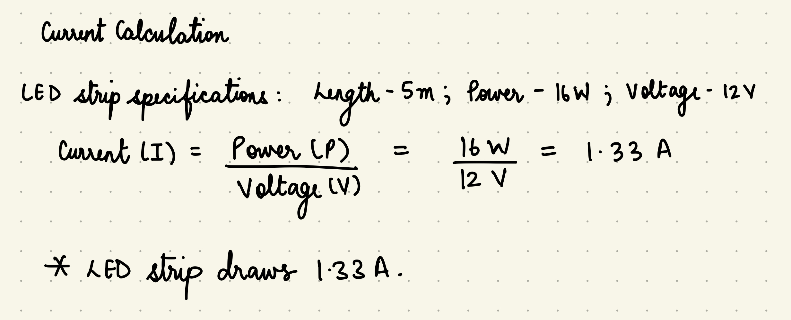
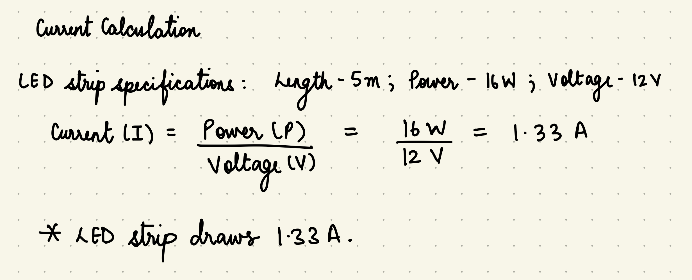

const int TRIG_PIN = 3; // Initialize pin that trig of sensor is connected to
const int ECHO_PIN = 6; // Initialize pin that echo of sensor is connected to
const int LED_PIN = 9; // LED strip controlled by n-MOSFET
void setup() {
pinMode(TRIG_PIN, OUTPUT);
pinMode(ECHO_PIN, INPUT);
pinMode(LED_PIN, OUTPUT);
Serial.begin(9600);
}
void loop() {
// Send ultrasonic trigger pulse
digitalWrite(TRIG_PIN, LOW);
delayMicroseconds(2);
digitalWrite(TRIG_PIN, HIGH);
delayMicroseconds(10);
digitalWrite(TRIG_PIN, LOW);
// Read echo time
long duration = pulseIn(ECHO_PIN, HIGH);
float distance = duration / 58.0; // Convert to cm
// Print distance for debugging
Serial.print("Distance: ");
Serial.print(distance);
Serial.println(" cm");
// Adjust LED brightness based on distance
int brightness = map(distance, 200, 5, 255, 0); // Closer = dimmer, farther = brighter between 5 and 200 cm.
brightness = constrain(brightness, 0, 255); // Keep within 0-255 range
analogWrite(LED_PIN, brightness); // Adjust LED brightness
delay(200); // Small delay to stabilize readings
}
void setup() {
pinMode(2, OUTPUT); // Motor 1
pinMode(3, OUTPUT);
pinMode(4, OUTPUT); // Motor 2
pinMode(5, OUTPUT);
}
void loop() {
// Move Both Motors Forward
digitalWrite(2, HIGH);
digitalWrite(3, LOW);
digitalWrite(4, HIGH);
digitalWrite(5, LOW);
delay(2000);
// Move Both Motors Backward
digitalWrite(2, LOW);
digitalWrite(3, HIGH);
digitalWrite(4, LOW);
digitalWrite(5, HIGH);
delay(2000);
// Motor 1 Forward, Motor 2 Backward
digitalWrite(2, HIGH);
digitalWrite(3, LOW);
digitalWrite(4, LOW);
digitalWrite(5, HIGH);
delay(2000);
// Motor 1 Backward, Motor 2 Forward
digitalWrite(2, LOW);
digitalWrite(3, HIGH);
digitalWrite(4, HIGH);
digitalWrite(5, LOW);
delay(2000);
// Stop Both Motors
digitalWrite(2, LOW);
digitalWrite(3, LOW);
digitalWrite(4, LOW);
digitalWrite(5, LOW);
delay(2000);
}
 The voltage at different points in the circuit varies. It is 12V at the positive end of the LED strip, and varies because it is controlled by MOSFET at the negative end of the strip.
It also varies according at the MOSFET Drain (D) and is 0V at the MOSFET Source (S).
IT varies from 0-5V at the MOSFET Gate (G) because it comes from the PWM Arduino Pin 9.
At the VCC of the Ultrasonic Sensor it is 5V and at the Ultrasonic Sensor ground it is 0V.

The transistor must handle at least 1.5A (as on the box of the LED to account for fluctuations etc. or 1.33 A, theoretically), which the DMT6009LCT MOSFET can easily handle as it is rated for 37.2A continuous on the datasheet.
The voltage at different points in the circuit varies. It is 12V at the positive end of the LED strip, and varies because it is controlled by MOSFET at the negative end of the strip.
It also varies according at the MOSFET Drain (D) and is 0V at the MOSFET Source (S).
IT varies from 0-5V at the MOSFET Gate (G) because it comes from the PWM Arduino Pin 9.
At the VCC of the Ultrasonic Sensor it is 5V and at the Ultrasonic Sensor ground it is 0V.

The transistor must handle at least 1.5A (as on the box of the LED to account for fluctuations etc. or 1.33 A, theoretically), which the DMT6009LCT MOSFET can easily handle as it is rated for 37.2A continuous on the datasheet.